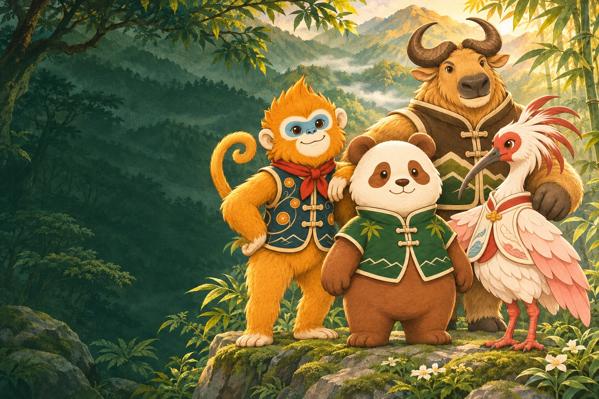
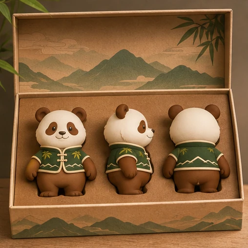
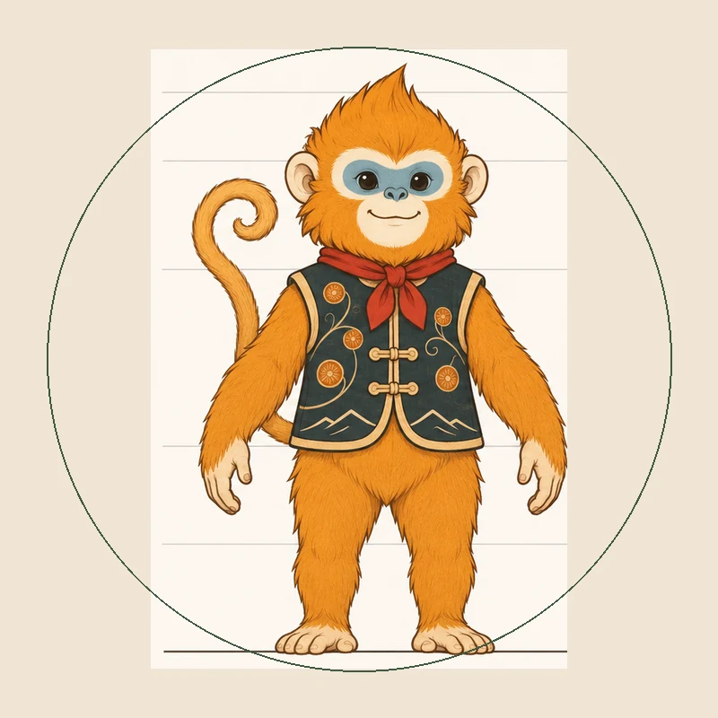

JINYUE · ANIMATED GREETING
把大的一半递给你
“这个给你，我们下次再一起找。”
CHARACTER WORKS

QINLING FOUR TREASURES · MOUNTAIN GUARDIANS
四种秦岭生灵，四个并肩同行的角色。
从每一位伙伴的故事出发，再走进他们共同守护的山林。
FOUR STORIES · FOUR WORLDS
从每一位角色的故事与创作出发，走近秦岭的四种生命气质。
FOUR EQUAL CHARACTERS
选择一位伙伴，进入他的角色档案与作品内容。

看角色背后的创作过程，也可以把自己的作品带来和大家分享。
CHARACTER ARCHIVE
四个独立角色，共同组成秦岭四宝。点击任一角色，进入对应档案。
JINYUE · ANIMATED GREETING
“这个给你，我们下次再一起找。”
CHARACTER WORKS
WOODLAND STORIES
从金跃递出第一颗果子，到岩拓为同伴留下最后一盏灯。
MOTION GALLERY
四位角色的山林短片。点开播放，喜欢的可以保存为 GIF。
看金跃打招呼的片段，也可以打开立体模型查看细节。
STICKER ATLAS
四位角色各有 32 款静态表情。点开任一表情，可预览并保存 PNG；动态内容仅在金跃角色页展示。
FOUR CHARACTER COLLECTION
浏览四位角色的主题海报与文创概念，点击图片查看大图。
分享你画的四宝、做的文创或拍下的山林故事，和其他来访者交流创作。
QINLING FOUR TREASURES
以秦岭四宝为整体IP，金跃、七仔、丹翔、岩拓为四个并列角色单元。

项目内容由统一的秦岭四宝世界观与四个角色IP共同构成。角色设定、故事、表情与文创应用均可按整体或单角色方向进一步沟通；具体使用媒介与授权范围由合作双方另行确认。
浏览四宝角色下载可填写的合作需求单